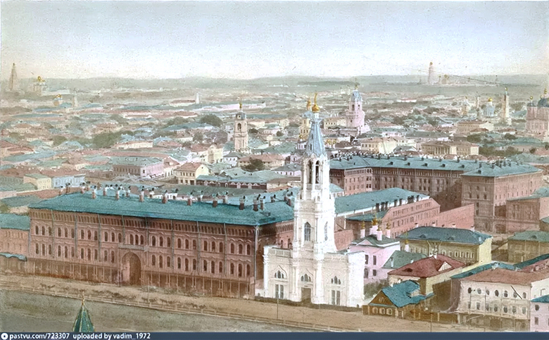
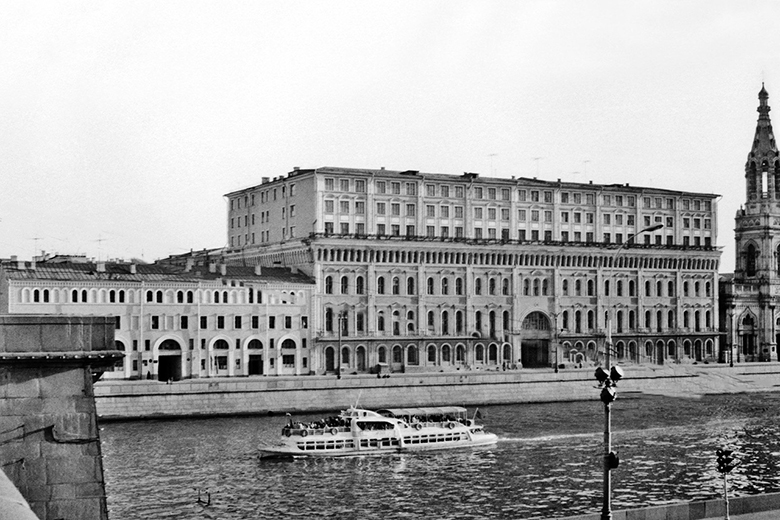
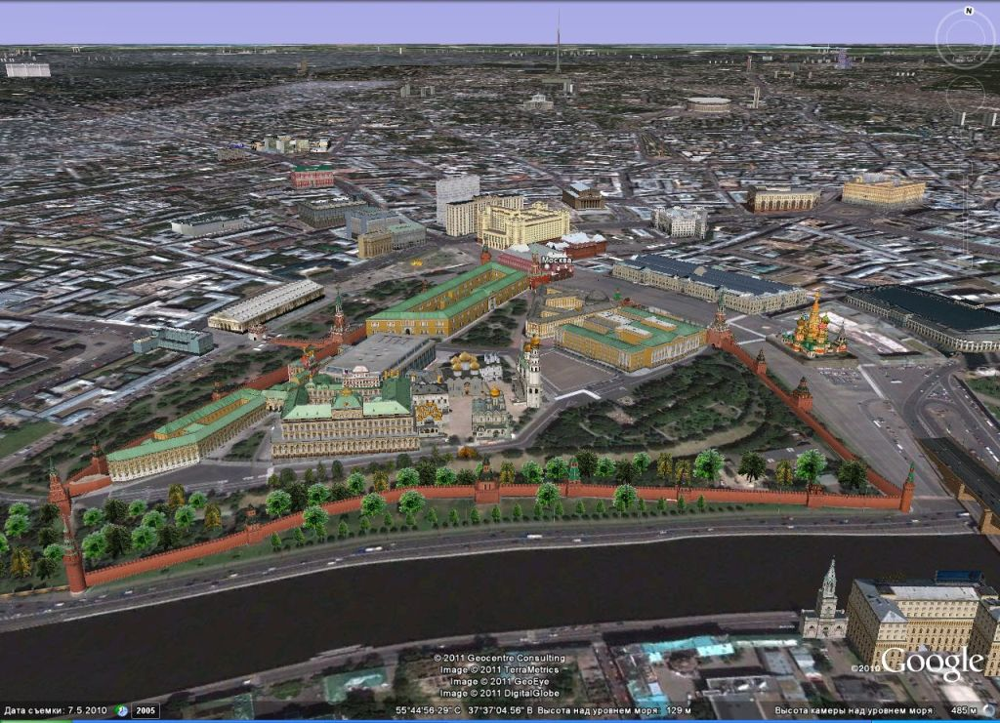
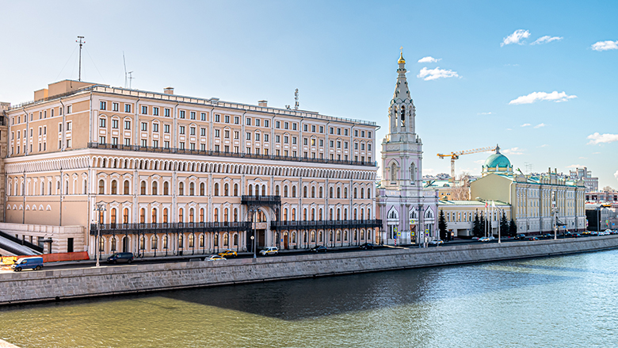

Кокоревское подворье было одним из самых больших и современных в Москве. Здание строилось по проекту известного петербургского архитектора академика И.Д.Черника. Подворье возвели в 1864 году. На его строительство была потрачена баснословная по тем временам сумма – более 2 млн.р. И это неудивительно:шесть строений заняли целый квартал от Софийской набережной до Болотной улицы, еще один корпус находился внутри периметра этого комплекса.
Кокоревское подворье имело самое передовое на тот момент инженерное оснащение, проектировщики предусмотрели все удобства для постояльцев. На этажах были буфеты, в здании работало несколько кухонь. Кипяток для чая гости могли брать в специальных «кубовых», где стояли нагревательные кубы уже с теплой водой. Для хранения товаров были оборудованы особые комнаты с прочными каменными стенами, для более ценных вещей – помещения, обитые стальными листами. В зданиях подворья находилось более 20 магазинов, отделение телеграфа и ресторан. В 1883 году в комплекс провели электричество. Сервис в подворье был настолько хорош, что там стали останавливаться не только купцы. В разное время здесь проживали многие известные деятели русской культуры:композиторы Петр Чайковский и Антон Аренский, писатель Дмитрий Мамин-Сибиряк, художники Василий Поленов. Иван Крамской, Илья Репин и Василий Верещагин. Кстати, все эти известные люди занимали самые престижные номера, расположенные на втором этаже.
В 1930-е годы большевики надстроили три этажа на здании, расположенном на Софийской набережной и отдали сооружение военным.

В 1972 году там располагалось казарма для курсантов академии.

Кузнеца военно-технической элиты СССР располагалась в центре Москвы.

Позже здание отремонтировали и туда въехал исполком СНГ.
